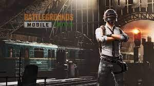

BGMI

Battlegrounds Mobile India is an action and adventure game that transports you to an island full of players who are all trying to survive. After jumping out of an airplane and landing on the ground, you'll have to make your way all over a map that's brimming with enemies. At all times, you need to pay close attention and watch your back to make sure none of your rivals succeed in catching you by surprise. With a typical battle royale gameplay, Battlegrounds Mobile India immerses you in countless events and tournaments to complete. You'll get to battle it out online against players from all over the world who all have the same goal in mind: to be the last survivor standing. Also, in some game modes, you can even create alliances that let you band together with other players and work as a team. Battlegrounds Mobile India, or BGMI, is a player-versus-player shooter game in which up to 100 players compete in a battle royale, a type of large-scale last man standing deathmatch in which players compete to be the last one standing. Players can enter the match as individuals or as small groups of up to four. Each match starts with players parachuting from a plane onto one of the following six maps:Erangel (Themed / Normal),]Miramar,Vikendi,Livik (Themed / Normal),Karakin,team death match, Sanhok ( Themed / Normal) Each round, the plane's flight path across the map changes, requiring players to quickly determine the best time to eject and parachute to the ground. Players begin with no equipment other than customised clothing options that have no effect on gameplay. Once on the ground, players can search buildings, ghost towns, and other locations for weapons, vehicles, armour, and other items. At the start of a match, these items are procedurally distributed throughout the map, with higher-risk zones typically having better equipment. Finished players can also be looted for their gear. Players can choose to play in first-person or third-person, with each having advantages and disadvantages in combat and situational awareness. Every few minutes, the map's playable area shrinks towards a random location, with any player caught outside the safe zone taking incremental damage and eventually being eliminated if the safe zone is not entered in time; in game, the boundary appears as a shimmering blue wall that contracts over time. This results in a more constrained map, which increases the likelihood of encounters. Random regions of the map are highlighted in red and bombed during the match, posing a threat to players who remain in that area. Players are warned a few minutes before these events in both cases, giving them time to relocate to safety. A plane will occasionally fly over different parts of the playable map at random, or wherever a player uses a flare gun, and drop a loot package containing items that are normally unobtainable during normal gameplay. These packages emit highly visible red or yellow smoke, attracting interested players and resulting in additional confrontations. A full round takes about 30 minutes on average.
Download link :- https://play.google.com/store/apps/details?id=com.pubg.newstate
Home
previous page
Next page